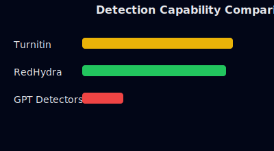

🌞
🌙
RRedHydra AI & Plagiarism Checker
An open‑source, lifetime‑free AI & plagiarism detection platform
Launch the Tool
How detection works
Document ingest
AI probability modeling
Paraphrase analysis
Plagiarism matching
Visual report
System architecture
Input
AI Detector
Paraphrase
Plagiarism
Report
Benchmark overview
